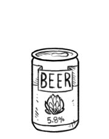

beer
Beer is brewed from cereal grains, like malted barley, wheat, maize and rice. During the brewing process, the starch sugars ferment and produce ethanol and carbonation in the beer. Nowadays, hops is added to beer, as a preserving agent, but also because it adds bitterness and other flavors. Modern beer ranges from 4 to 6 percent strength ABV (alcohol by volume), but there are varieties that are much lower and much higher than this (up to 20-40 percent).
The sediment in craft beer, can be used as a leavening agent in beer bread.
There is some nutritional value in beer, but it varies greatly from beer to beer, and this does not make it essential to good health.